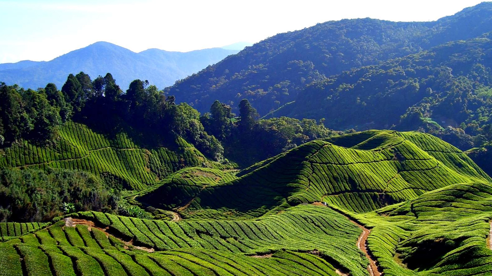

Replete with waterfalls, historical caves, comfortable resorts and homestays, Wayanad in Kerala is famous for its spice plantations and wildlife. Walking through the sprawling spice plantations, trekking to the pre-historic caves and experiencing a resort holiday are one of the many things you can do to get a taste of Wayanad. Wayanad is best known for the wildlife reserves - Wayanad wildlife reserve which is home to an exquisite variety of flora and fauna. Wayanad wildlife reserve is an integral part of the Nilgiri biosphere reserve peacefully located amidst the serene hills of Western Ghats. Wayanad homes a wide variety of wildlife like elephants, leopards, and bears. Wayanad is a perfect weekend idea from the cities of South India. If taking a road trip from Bangalore, you will drive through three national parks: Nagarhole, Bandipur and Mudumalai.
Edakkal caves are well known for its pictorial depictions (cave art), which are thought to be of 6000 B C. To achieve the hollows, one needs to trek through the Ambukutty Mala. It will take around 45 minutes to climb the hill and you will never get baffled in your outing to these historical caves & it is one of the famous places to see in Wayanad. Inside the cave, you can see two chambers. The lower chamber is 18 ft long, 12 ft wide and 10 ft high and the upper chamber is 96 ft long, 22 ft wide and 18 ft high. You can see animal figures and objects used by humans, on the walls of the caves.
A perfect blend of different natural colours makes Kuruva Island one of the best places to visit in Wayanad. It is a protected river delta with a number of islands over the middle of Kabini River, the famous east flowing river in Kerala. The island is sprawling across an area of 950 acres with a dense population along with some rich and rare species of flora and fauna. It protects the evergreen forest ranges which provide a different ambience and thus making it an ideal choice for tourism. There are bridges made of bamboo trees and many plants which we have not even heard of.
Looking for a weekend getaway this weekend, then head out to Wayanad and visit the famous Chembra Peak. Eight kilometres south of Kalpetta, close to the town of Meppady, lays the most elevated top in Wayanad. Chembra crest borders Nilgiri slopes in Tamil Nadu and Vallarimala in Kozhikode and it is one of the beautiful places to see in Wayanad. This place is a perfect goal for trekking exercises. Climb up the rough landscapes of the Chembra Peak found 2,100 meters above ocean level on the southern piece of Wayanad. Chembra is the tallest peak in Wayanad and is a perfect zone for trekking.
One of the major tourist places to visit in Wayanad is Banasura Sagar Dam that impounds the famous Karamanathodu tributary of the east flowing river in Kerala that is Kabini River. The dam is encircled amidst a beautiful nature with a lot of options to do trekking and similar adventure activities. Hundreds of tourists arrive at the dam to enjoy its beauty and take photographs. It is a part of the Indian Banasura Sagar Project consisting of a dam and a canal project.
When you visit Wayanad, a major hill station in Kerala, you should visit Pookode Lake which is considered to be one of the best places to visit in Wayanad. It is the most beautiful freshwater lake located in South India nestled amidst the large evergreen forests and multitudes of mountains slopes. The lake provides space to Panamaram, a small rivulet that becomes Kabani River to originate. The Pookode Lake is spreading across an area of 8.5 hectares with a depth of around 6.5 meters. Geographical experts found that the lake resembles the shape of India’s map.
If you are looking for some fun-filled Wayanad tourist places then the famous Neelima View Point is a must visit for you. A place for thrill seekers, Neelimala View point can be reached by means of trekking at the same time offering a few astonishing trek trails. The perspective of the valley from the best is essentially captivating alongside a beautiful vision of Meenmutty Falls and it is one of the best Wayanad places to see. From the point, vacationers can see the smooth white streams spouting through the walk, advancing towards the waterway.